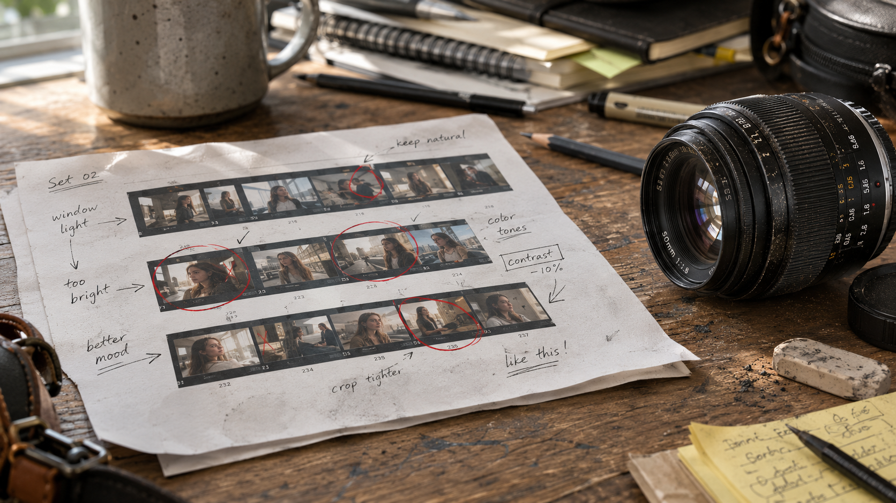

← BACK TO DOSSIERS LIST
CALIBRATION CASE FILE // TREND: THE 5 LAYERS OF REALITY: HOW TO AUDIT ANY AI PROMPT FOR REALISM
Forensic Camera Realism: Building an Authentic Photographer's Work Table Scene with Physical Fidelity
DATE: 2026-07-09
STATUS: EVIDENCE_DETECTION
ENGINE: CHATGPT DALL-E 3

SPECIMEN IMAGE #16:9 - CLEAN OPTICS
Artificial image generation often defaults to polished desks, flawless equipment, and dramatic lighting that repeat across countless outputs. A photographer's work table is far more informative when it reflects ordinary use through fingerprints, paper wear, uneven lighting, scattered tools, and the subtle imperfections that naturally emerge from everyday workflow rather than aesthetic optimization.
In the sections above we decomposed the scene into physical layers instead of decorative keywords because believable realism comes from consistent interactions between objects, light, materials, and time. The deeper lesson, however, extends beyond visual description. The calibration console reveals that the most significant improvement happens through language-level lexicon shifts, where generic expressions are systematically replaced with physically observable behaviors that camera systems actually record.
Lexicon shifts transform vague prompts into measurable photographic descriptions by replacing idealized vocabulary with material evidence, optical behavior, environmental entropy, and sensor limitations. Instead of requesting perfection, calibration focuses on surface wear, exposure distribution, gravity-driven deformation, realistic reflections, controlled optical imperfections, and information loss. This approach produces scenes that behave more like documentary photography than synthetic illustration because every descriptive choice corresponds to an observable physical process.
Returning to the original work table, authenticity is built from accumulated evidence rather than visual spectacle. If your goal is to consistently produce camera-grade realism with repeatable calibration methods, the ALPHA REALISM framework provides a structured methodology for prompt construction, forensic scene analysis, and lexicon refinement. Continue exploring the complete calibration workflow through ALPHA REALISM to develop physically grounded prompts that prioritize observational fidelity over artificial aesthetics.
The 5 Layers of Reality Applied
Subject:
A photographer's work table with a printed contact sheet covered in handwritten notes, annotation marks, circled frames, and editing remarks beside a well-used interchangeable camera lens. The paper shows slight corner curl, minor handling creases, graphite smudges, and uneven ink pressure. The lens exterior displays realistic handling wear, faint dust accumulation around the focus ring, subtle fingerprints on the barrel, engraved markings with slight paint wear, and an attached rear cap resting naturally on a textured wooden desk among ordinary working materials.
Environment:
Available daylight enters from a nearby window, producing uneven ambient illumination with gentle shadow falloff and subtle highlight clipping on glossy paper. Small reflected light patches appear on the lens barrel while surrounding workspace objects create natural shadow interruptions. The desk contains practical visual clutter without symmetrical arrangement, maintaining believable workspace disorder and documentary balance.
Physics:
Gravity creates slight paper curling along exposed edges while the lens rests with realistic weight distribution. Soft reflections vary across coated glass elements depending on viewing angle. Fine airborne dust settles unevenly on the desk and lens surfaces. Minor friction marks, pressure impressions from handwriting, and overlapping paper edges demonstrate ordinary physical interaction over time.
Time:
The workspace shows accumulated everyday use through faint scratches in the tabletop finish, light dust deposits, softened paper edges, slight discoloration near frequently handled areas, subtle graphite residue, and small signs of repeated annotation work without appearing abandoned or artificially aged.
Camera:
Simulated full-frame mirrorless camera using a 50mm lens at approximately f/4, handheld documentary perspective, ISO 640, 1/80 second exposure, daylight white balance, slight sensor grain, moderate dynamic range, realistic edge softness, mild lens microcontrast variation, natural highlight rolloff, restrained sharpening, subtle optical imperfections, and gentle compression behavior without artificial cinematic processing.
The Lexicon Shift Table
| Appearance (Dead Adjective) |
|
Living Event (Cause & Effect) |
| perfect lighting |
➔ |
available window light with uneven ambient shadow distribution |
| cinematic lighting |
➔ |
scattered daylight producing practical reflections and soft shadow transitions |
| ultra sharp |
➔ |
natural center sharpness with subtle edge softness from realistic optics |
| hyper detailed |
➔ |
selective detail retention with realistic information loss across materials |
| immaculate workspace |
➔ |
working desk showing ordinary visual clutter and practical object placement |
| flawless paper |
➔ |
printed sheet with handling creases, curled edges, and handwritten pressure variation |
| brand-new lens |
➔ |
well-used lens with light handling wear, dust accumulation, and fingerprint traces |
| studio perfection |
➔ |
observational documentary capture shaped by uncontrolled environmental conditions |
Calibration Prompt Console
Subject Layer: A photographer's work table featuring a printed contact sheet covered with handwritten notes, circles, editing annotations, realistic graphite smudges, slight paper curling, and a well-used interchangeable camera lens resting beside the print on a textured wooden desk. Preserve practical object placement, authentic handling wear, dust accumulation, engraved lens markings, subtle fingerprints, and believable workspace disorder. Environment Layer: Available daylight from a nearby window creates uneven illumination, soft ambient shadows, localized reflections on coated lens surfaces, ordinary studio clutter, scattered stationery, and naturally imperfect composition without decorative staging. Physics Layer: Gravity affects paper edges through gentle curling, reflections shift realistically across glass coatings, dust settles irregularly, handwritten impressions slightly deform the paper surface, and overlapping objects generate physically plausible shadow interaction. Time Layer: Light scratches on the tabletop, softened paper corners, accumulated dust, minor discoloration from repeated handling, worn annotation marks, and realistic material fatigue communicate an actively used workspace. Camera Layer: Full-frame mirrorless camera simulation, 50mm lens, f/4, ISO 640, 1/80 second, handheld documentary framing, realistic sensor grain, restrained sharpening, mild lens edge softness, natural highlight rolloff, subtle optical imperfections, balanced dynamic range, authentic color response, documentary realism without cinematic stylization --ar 16:9
Do you want to generate precise AI images?
Unlock our alpha realism blueprint, physical reliable framework to get the best of your creations with the ALPHA REALISM Guide.
Download Ebook Now